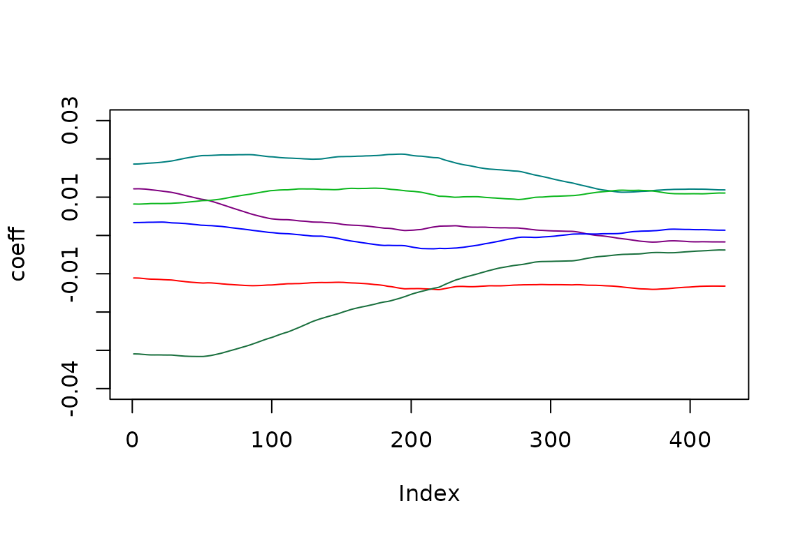
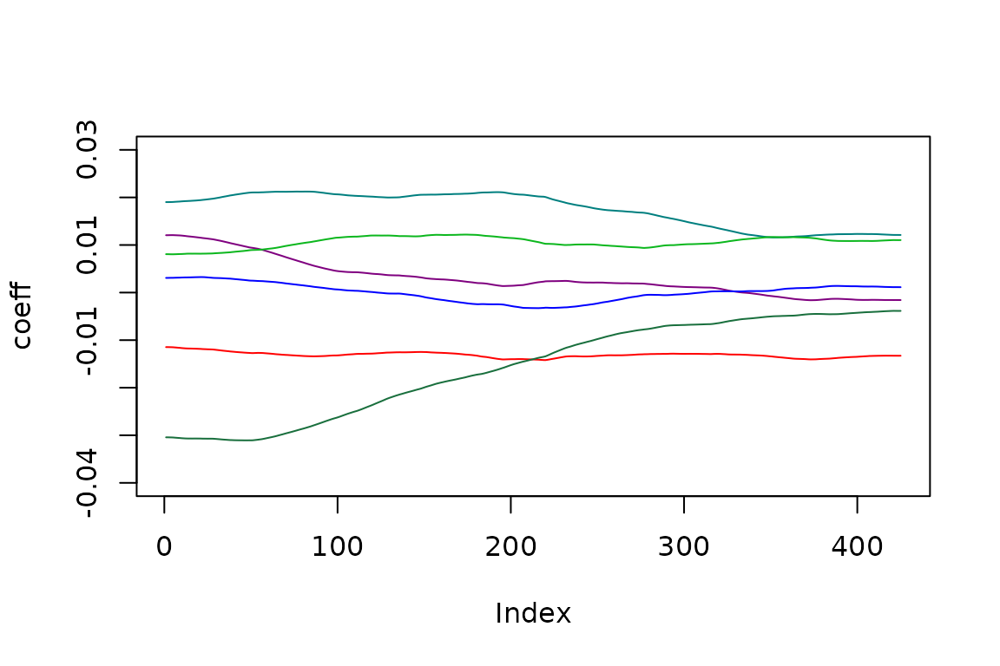

Time-varying trading days
Introduction
The state space framework allows an easy estimation of time-varying trading days effects.
# take a (transformed) series
s<-log(rjd3toolkit::ABS$X0.2.09.10.M)Modelling
We model such effects by integrating in the state array the regression coefficients. As usual, the regression variables are modeled by using contrasts (for instance: #days-#Sundays). the coefficient follow a multivariate random walk. As for the usual regression, we put the constraint that the sum of the coefficients is 0 (which implies that one coefficient is derived from the others).
To be noted that fixed coefficients correspond to no innovation in the random walk. We consider that the same innovation variance applies on the coefficients of each day (option contrast=FALSE) or of each contrasts (option contrast=TRUE). In this latter case, the variance of the innovation of the contrasting (group of) days is larger.
Such time varying trading days can be plugged in any representation of the series.
SARIMA + TDvar
# create the model
model<-rjd3sts::model()
# create the components and add them to the model
rjd3sts::add(model, rjd3sts::sarima("airline", 12, c(0,1,1), c(0,1,1)))
rjd3sts::add(model, vtd<-rjd3sts::reg_td("td", 12, start(s), length(s), contrast = FALSE))
#estimate the model
rslt<-rjd3sts::estimate(model, s)
ss<-rjd3toolkit::result(rslt, "ssf.smoothing.states")
vss<-rjd3toolkit::result(rslt, "ssf.smoothing.vstates")Available results
The results can be retrieved through the “result” function. All the available information are displayed by means of the “dictionary” method
print(rjd3toolkit::dictionary(rslt))
#> [1] "likelihood.ll" "likelihood.ser"
#> [3] "likelihood.residuals" "scalingfactor"
#> [5] "ssf.ncmps" "ssf.cmppos"
#> [7] "ssf.cmpnames" "parameters"
#> [9] "parametersnames" "fn.parameters"
#> [11] "ssf.T(*)" "ssf.V(*)"
#> [13] "ssf.Z(*)" "ssf.P0"
#> [15] "ssf.B0" "ssf.smoothing.array(?)"
#> [17] "ssf.smoothing.varray(?)" "ssf.smoothing.cmp(?)"
#> [19] "ssf.smoothing.vcmp(?)" "ssf.smoothing.components(?)"
#> [21] "ssf.smoothing.fastcomponents(?)" "ssf.smoothing.vcomponents(?)"
#> [23] "ssf.smoothing.state(?)" "ssf.smoothing.vstate(?)"
#> [25] "ssf.smoothing.states" "ssf.smoothing.vstates"
#> [27] "ssf.filtering.array(?)" "ssf.filtering.varray(?)"
#> [29] "ssf.filtering.cmp(?)" "ssf.filtering.vcmp(?)"
#> [31] "ssf.filtering.state(?)" "ssf.filtering.states"
#> [33] "ssf.filtering.vstates" "ssf.filtering.vstate(?)"
#> [35] "ssf.filtered.array(?)" "ssf.filtered.varray(?)"
#> [37] "ssf.filtered.cmp(?)" "ssf.filtered.vcmp(?)"
#> [39] "ssf.filtered.state(?)" "ssf.filtered.vstate(?)"
#> [41] "ssf.filtered.states" "ssf.filtered.vstates"Time varying trading days
colfunc<-colorRampPalette(c("red","blue","green","#196F3D"))
colors <- (colfunc(7))
pos<-rjd3toolkit::result(rslt, "ssf.cmppos")
plot(ss[,pos[2]+1], type='l', col=colors[1], ylim=c(-0.04, 0.03), ylab='coeff')
lines(ss[,pos[2]+2], col=colors[2])
lines(ss[,pos[2]+3], col=colors[3])
lines(ss[,pos[2]+4], col=colors[4])
lines(ss[,pos[2]]+5, col=colors[5])
lines(ss[,pos[2]+6], col=colors[6])
lines(-rowSums(ss[,pos[2]+(1:6)]), col=colors[7])
BSM + TDvar
# take a (transformed) series
s<-log(rjd3toolkit::ABS$X0.2.09.10.M)
# create the model
model<-rjd3sts::model()
# create the components and add them to the model
llt<-rjd3sts::locallineartrend('l')
seas<-rjd3sts::seasonal("s", 12, "HarrisonStevens")
n<-rjd3sts::noise('n')
rjd3sts::add(model, llt)
rjd3sts::add(model, seas)
rjd3sts::add(model, n)
rjd3sts::add(model, vtd<-rjd3sts::reg_td("td", 12, start(s), length(s), contrast = FALSE))
#estimate the model
rslt<-rjd3sts::estimate(model, s)
ss<-rjd3toolkit::result(rslt, "ssf.smoothing.states")
vss<-rjd3toolkit::result(rslt, "ssf.smoothing.vstates")Time varying trading days
colfunc<-colorRampPalette(c("red","blue","green","#196F3D"))
colors <- (colfunc(7))
pos<-rjd3toolkit::result(rslt, "ssf.cmppos")
plot(ss[,pos[4]+1], type='l', col=colors[1], ylim=c(-0.04, 0.03), ylab='coeff')
lines(ss[,pos[4]+2], col=colors[2])
lines(ss[,pos[4]+3], col=colors[3])
lines(ss[,pos[4]+4], col=colors[4])
lines(ss[,pos[4]]+5, col=colors[5])
lines(ss[,pos[4]+6], col=colors[6])
lines(-rowSums(ss[,pos[4]+(1:6)]), col=colors[7])